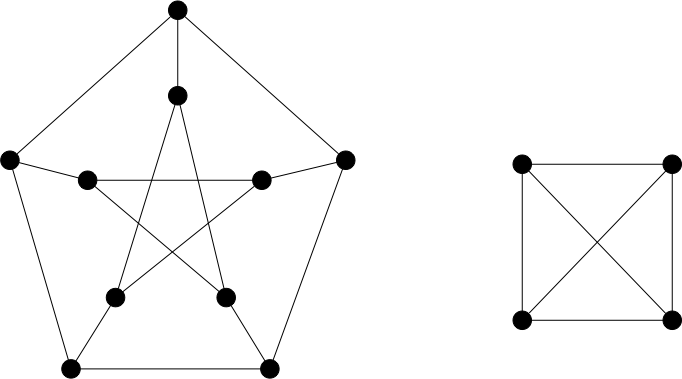
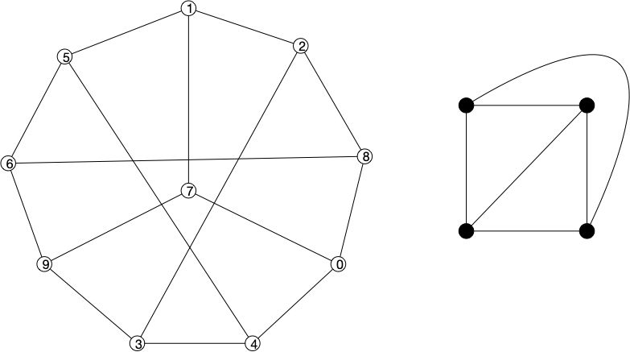
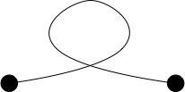
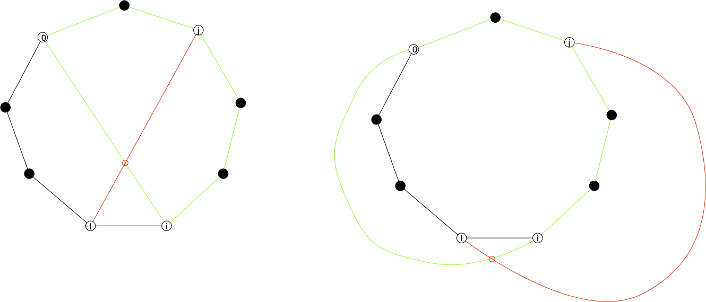

Problème
Un graphe est une structure abstraite. Lorsque l'on veut la représenter graphiquement, il faut la dessiner. Cette opération instinctive peut s'écrire formellement ainsi :
Définition
Un dessin d'un graphe $G= (V, E)$ est un couple de fonctions :
- une injection $f: V \rightarrow \mathbb{R}^2$ associant les sommets à des points du plan (les sommets sont distincts),
- une fonction $g: E \rightarrow \mathbb{C}$ associant les arêtes à des courbes $\gamma_{xy}$ allant d'un sommet à l'autre ($\gamma_{x, y}(0) = f(x)$ et $\gamma_{x, y}(1) = f(y)$)
- pour toute courbe $\gamma_{xy}$, $\gamma_{xy}(s) \notin f(V)$ pour tout $0<s <1$.
La dernière condition n'est pas restrictive puisqu'on peut toujours modifier d'un epsilon une courbe pour qu'elle évite un nombre finis de points.
Définition
Une courbe est une fonction $\gamma$ continue de $[0, 1]$ dans $\mathbb{R}^2$ telle que $\gamma(s) \neq \gamma(t)$ si $s\neq t$ et $\{s, t\} \neq \{0, 1\}$.
Par exemple le dessin ci-dessous des graphes de Petersen et de $K_4$ :

Il existes de nombreuses façon de dessiner les graphe, par exemple ci-dessous un autre dessin des deux graphes précédents :

On a utilisé des courbes simples, mais rien d'empêche de faire dans le bizarre :

En revanche, la définition d'une courbe empêche les boucles, le dessin suivant n'est donc pas à proprement parler un dessin de graphe.

Dessiner un graphe est un problème peu simple car il dépend de ce que l'on cherche à faire :
- trouver les parties denses,
- les nœuds d'articulation,
- être joli
- ...
Avant d'aller plus loin restreignons nous un peu. On voit bien que si un graphe n'est pas connexe, on peut dessiner ses parties connexes indépendamment. Pour simplifier :
Par défaut, on ne considérera ici que des graphes connexes.
Nous allons nous intéresser ici à la représentation d'un graphe avec le moins d'intersections.
Définition
Une intersection d'un dessin dessin $(f, g)$ d'un graphe $G= (V, E)$ est un point d'intersection de deux courbes représentant des arêtes. C'est à dire un point $p$ tel que $p = g(xy)(s) = g(zt)(t)$
Le dessin précédent possède 5 intersections.
Les dessins sans intersections sont dit planaires :
Définition
Un dessin planaire d'un graphe est un dessin sans intersections.
On a alors clairement que :
Proposition
Soit $(f, g)$ un dessin planaire de $G$. Pour tout chemin $x_0\dots x_k$ de $G$, la courbe qui est la concaténation des courbes associée aux arêtes $x_ix_{i+1}$ est une courbe.
TBD dessin
Cette définition apporte deux questions auquel on va répondre :
- tous les graphes admettent-il un dessin planaire ?
- est-ce facile de dessiner planairement un graphe ?
Mais avant de poursuivre, répondons rapidement aux deux questions précédentes : NON et OUI et attardons nous un peu sur les usages et l'importance de la planarité.
Exemple
Il y a de nombreux usages des graphes planaires. Citons-en quelques uns.
Circuits électroniques
TBD minimiser les couches.
Cartes de géographie
TBD pays et frontières = graphe planaire
3D
TBD triangulation de textures. Algorithmes de recherche, etc TBD : Il sont aussi extrêmement utilisés pour les mesh 3D. C'est une surface sans trous.
Preuves
La classe des graphes planaires est assez grande tout en ayant de fortes contraintes. Ils possèdent donc de nombreuses propriétés et beaucoup de problèmes NP-complets en général deviennent polynomiaux pour eux.
Propriétés générales
On va ici supposer que l'on a un dessin planaire d'un graphe $G$.
Courbe de Jordan
Un outil géométrique important pour étudier les graphes planaires est la courbe de Jordan et son célèbre théorème associé :
Définition
Une courbe de Jordan est une courbe $\gamma$ telle que $\gamma(0) = \gamma(1)$.
Ce qui appliqué aux dessins planaire donne :
Proposition
Soit $(f, g)$ un dessin planaire de $G$. Pour tout cycle $x_0\dots x_k$ de $G$, la courbe qui est la concaténation des courbes associée aux arêtes $x_ix_{i+1}$ est une courbe de Jordan.
Le célèbre théorème associée aux courbes de Jordan est :
Théorème
Pour toute courbe de Jordan $\gamma$, il existe $\mathcal{P}_1$ et $\mathcal{P}_2$ deux sous-ensembles de $\mathbb{R}^2 \backslash \gamma([0, 1])$ tels que :
- $\mathcal{P}_1 \cup \mathcal{P}_2 = mathbb{R}^2 \backslash \gamma([0, 1])$
- quelle que soit la courbe $\gamma'$ telle que $\gamma'(0) \in \mathcal{P}_1$ et $\gamma'(1) \in \mathcal{P}_2$ alors $\gamma'([0, 1]) \cap \gamma([0, 1]) \neq \varnothing$
Par exemple :
Ce que dit le théorème est tout simple :
Corollaire
Toute courbe fermée sépare l'espace en deux : l'intérieur et l'extérieur de la courbe.
Mais à démontrer c'est une autre paire de manche car une courbe n'est que continue. Elle peut donc faire plein de bêtises... On verra plus tard que pour les graphes, on peut utiliser une version affaiblie de ce théorème que l'on démontrera.
Appliqué aux graphes le corollaire donne :
Proposition
Soit $(f, g)$ un dessin planaire de $G$. Soient :
- $x_0\dots x_k$ est un cycle de $G$ associé à la courbe de Jordan $\mathcal{C}$
- $x_0 u_1 \dots u_px_i$ un chemin dont aucun $u_m$ n'est dans $\{x_0, \dots, x_k\}$
- $x_jv_1 \dots v_qx_l$ un chemin tel que $0< j < i$, $i< l < k$ dont aucun $v_m$ n'est dans $\{x_0, \dots, x_k\}$
Alors une courbe associée à un chemin est entièrement à l'intérieur de $\mathcal{C}$ et l'autre entièrement à l'extérieur
preuve
preuve
Si les deux courbes étaient à l'intérieur ou à l'extérieur, on serait dans un des deux cas ci-dessous :

Ce qui implique au moins une intersection.
Ceci nous suffit pour montrer que ni $K_5$ (à gauche dans la figure ci-dessous) ni $K_{3, 3}$ (à droite dans la figure ci-dessous) ne peuvent être planaires ! En effet tout deux admettent des circuit hamiltoniens (en vert) :

Et en analysant les autres arêtes il n'y a pas assez de place à l'intérieur et à l'extérieur pour les caser. Ci dessous un des cas possibles, les autres se résolvent de la même manière :

Ceci nous donne une réponse à notre première question : NON tous les graphes n'admettent pas de dessin planaire. Ce qui nous permet de définir les graphes planaires :
Définition
Un graphe est planaire s'il admet un dessin planaire.
Tous les dessins d'un graphe ne sont bien sur pas planaires, comme le montre les 2 dessins de $K_4$.
Ceci nous donne aussi une technique de preuve pour savoir si un graphe hamiltonien est planaire ou pas :
- le circuit hamiltonien est une courbe de Jordan
- les autres arêtes sont soient à l'intérieur soit à l'extérieur du circuit.
Comptage des faces
Définition
Un ensemble $A \subseteq \mathcal{R}^2$ est connexe si pour tous $x, y \in A$ il existe une courbe $\gamma$ telle que :
- $\gamma(0) = x$, $\gamma(1) = y$
- $\gamma([0, 1]) \subseteq A$
Définition
Les faces d'un dessin planaire $(f, g)$ d'un graphe connexe $G=(V, E)$ sont les régions connexes de $\mathcal{R}^2 \backslash (\cup_{xy \in E}g(xy)([0, 1]))$.
Les faces sont bien ce que l'on pense qu'elles sont, si on n'oublie pas la face extérieur (infinie). Le graphe suivant à donc 3 faces :

Proposition (formule d'Euler)
Soit $G = (V, E)$ un graphe et $(f, g)$ un de ses dessins planaires. Si $F$ est son nombre de faces, $n$ son nombre de sommets et $m$ son nombre d'arêtes, on a l'égalité :
preuve
preuve
TBD cours papier
La formule d'Euler montre que le nombre de faces ne dépend pas de son dessin ! On peut donc parler du nombre de faces d'un graphe planaire indépendamment de son dessin planaire. L'exemple ci-après montre deux dessins planaires différents de $K_4$, les faces sont différentes, mais leur nombre (3) est le même :

TBD preuve
euler sur le nombre de faces